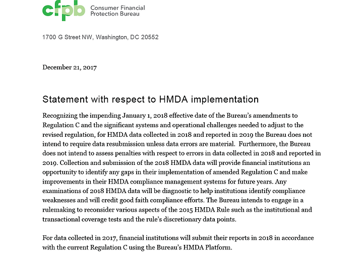
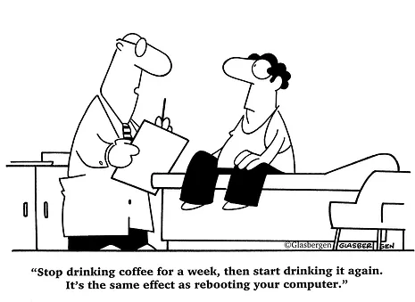

Article By: Gregg Oberg, Spillane Consulting Associates, Inc.
As an industry, we’ve been anticipating the changes to HMDA data collection since Dodd-Frank. We’ve been through the creation of the CFPB and transfer of rule making authority to that agency, interim rules, final rules, Guides, charts, training, etc. etc. etc. Literally thousands of pages, hours, and dollars spent to prepare.
So you’d think we would have some clarity at this point. But, after all the effort spent trying preparing ourselves, the CFPB throws a wrench into our planning with ~ 200 words.

So, what’s that all about? Why is this happening, and what does it mean to us?
What Happened?
Substantively, two things jumped out at me
-
No penalties for “good faith compliance”, and
-
Certain elements of the rule will be reconsidered in 2018 (and maybe beyond).
Answering the “why” goes a long way to understanding what (I think) this is all about. Taking the announcement at face value, the CFPB has realized that many of us are NOT ready for HMDA on Jan 1. There is a lot of change to HMDA for 2018, and not just in the data collection side of things.
By requiring online/digital submission of HMDA data for 2018 and beyond, the CFPB created a web of software connections that needed to be built and tested to properly collect and report data. Add to that changing regulatory language, and things got very complicated.
But I probably don’t need to tell any of you this. How many of you have noticed your LOS/POS or any of the connections from one system to another do something “odd” that doesn’t comply with HMDA? I’ve both seen and heard stories of software providers not being capable of collecting both “male” and “female” on the same borrower for Applicant Demographic Information … and that’s just the easy to explain example I can recall.
This is all to say, maybe the CFPB legitimately recognizes these issues and is giving us more time.
Another possibility is that HMDA is being dismantled. It’s no secret that the acting director of the CFPB has not been its biggest fan in the past. So the two extremes in answering “what happened” are either a) the CFPB is reasonably giving us more time to get ready, or b) we’ve been given a last minute reprieve. In the later case, what becomes REALLY interesting is considering what becomes of HMDA. Does it go away entirely (doubt it), get more burdensome (still doubt), or settle somewhere between?
Change on the Horizon
Another interesting topic to follow over the coming months will be the parts of the rule identified for reconsideration. The CFPB is interested in comments on both transactional and institutional coverage. In the 2015 Rule, we saw fewer transactions and institutions being exempted from HMDA. Rules around pre-approvals, HELOC lending, and the dwelling secured standard served to generally expand the scope of HMDA reportability. It seems likely that any reconsideration would shrink the scope of reportable transactions.
Could they remove all business purpose loans? Return “dwelling” to 1-4 family homes instead of including multifamily? Certainly could happen.
Practical Advice
As of now, nothing has substantively changed about the HMDA Rule itself. All of your preparation still applies, and there is no reason to toss the policy and procedure out the window.
You were prepared to deal with HMDA for real in less than a week. Now you’ll still be doing that, but with lower consequences. While the future of the rule is questionable at this early stage, I think its clear that HMDA in 2018 has gotten less risky.
Reading the limited language we have available, there will be a lot of effort and thought towards defining “good faith efforts” and whether an error is “material” for data re-submission purposes.
Take these opportunities to go back to the purpose of HMDA. We want to ensure people are all given a fair chance at home ownership, and not treated differently on the basis of any protected characteristics. I would anchor any decision on HMDA data in this spirit. There are clearly some ambiguities in the rule, and some interpretations can go either way.
As long as we are being ethical and legitimately attempting to get it right within the spirit of the rule, the CFPB intends to play a “diagnostic [role] to help institutions identify compliance weaknesses and will credit good faith compliance efforts.”

Thanks so much for reading our weekly newsletters. We’re not always going to be perfect, but because we always do our best and try not to overpromise, we hope that we’re always going to be trustworthy. Your calls and e-mails are very helpful – please keep contributing.
**These are our opinions. We’re not authorized, or willing, to express those of others.**
Thank you to Ben Giumarra, Spillane Consulting Associates, Inc., a member of our Education Committee, who with the support of other experts at SCA have put together this newsletter.